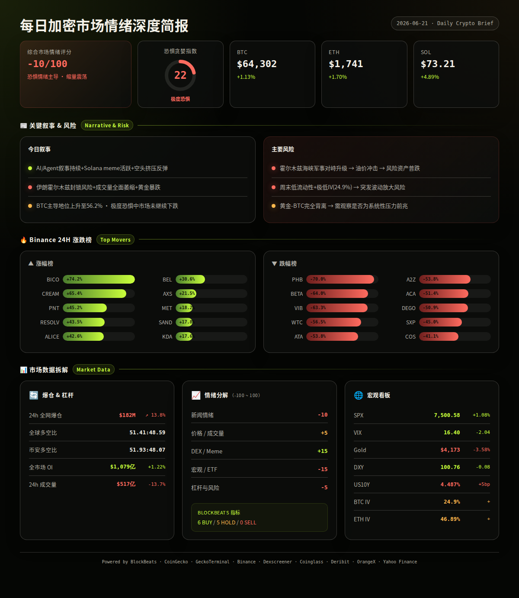
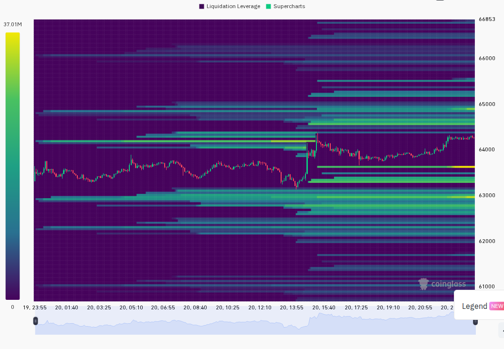
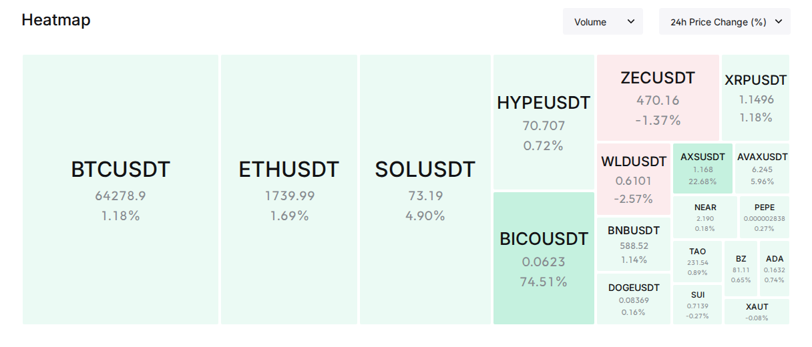

Now let me deliver the report. Since this session was triggered for the daily report, I'll output it directly.
[[reply_to_current]]
伊朗封锁霍尔木兹海峡引发避险恐慌，加密市场缩量反弹中极度恐惧
━━━━━━━━━━━━━━━━━━━━━━
⏰ 1. 24小时变化:
恐惧与贪婪指数 22 — 极度恐惧
BTC $64,302 +1.13%
ETH $1,741 +1.70%
SOL $73.21 +4.89%
VIX 16.40 Normal
成交量 $517 亿
DXY 100.76
爆仓 $1.82 亿 +13.76%
━━━━━━━━━━━━━━━━━━━━━━
—— BTC / ETH / SOL ——
市场整体温和反弹，BTC守住$63,000关口后小幅上行，SOL表现最强（+4.89%），ETH弱于BTC但跟随上涨。24小时全网爆仓$1.82亿，其中大部分为空头爆仓，短期空头挤压信号明显。
信息 1: 过去24小时全网爆仓$1.82亿，以空头爆仓为主，金额较前日+13.76%，表明市场存在空头过度集中后的挤压式反弹。（BlockBeats, Coinglass）
信息 2: Hyperliquid永续合约OI市场份额达8.4%，创历史新高，链上衍生品DEX正在蚕食CEX份额。（BlockBeats）
信息 3: 某巨鲸清算112.86枚WBTC，两个月累计亏损$78.2万，反映大户降杠杆趋势。（BlockBeats）
信息 4: 以太坊2026年Q1报告：Gas费用持续下降，用户数和交易量创历史新高，但收入模型承压。（BlockBeats）
—— 宏观 / 地缘政治 ——
本周最重磅事件：伊朗军方宣布封锁霍尔木兹海峡，美方否认观察到此情况，双方将在6月21日于瑞士谈判。消息导致周五黄金暴跌（-3.6% 5日）、油价剧烈波动。美国股市受制于板块轮动（$90亿做空英伟达），SPX微涨但成交量低迷。地缘不确定性主导短期风险偏好。
信息 5: 伊朗军方宣布关闭霍尔木兹海峡，美方称未观察到此类行动，伊朗代表团将赴瑞士与美国谈判（定于周日）。该海峡承担全球约20%石油运输量。（BlockBeats）
信息 6: 美联储7月加息25bp概率当前为38.5%，美债10Y收益率升至4.487%（24h +5bp），反映了市场对通胀持续性的担忧。（BlockBeats）
信息 7: 以色列总理下令黎巴嫩停火，中东紧张局势局部降温，但与伊朗在霍尔木兹的对抗正在升级。（BlockBeats）
信息 8: SPX收7,500.58（+1.08%单日），VIX 16.40处于正常区间，但黄金暴跌至$4,172.90（-1.21% 24h, -3.58% 5日）。黄金抛售表明避险资金并未流入贵金属，可能流向美元或现金。（Yahoo Finance, analysis）
—— AI / 半导体叙事 ——
AI叙事在X上保持第二高占比（97条/17%），United Health宣布$30亿AI投资为本周最大增量信息。半导体板块受美股轮动影响但AI基础设施支出趋势未改。
信息 9: United Health Group计划投资$30亿用于AI，医疗健康AI应用成为新的增长叙事。（BlockBeats）
信息 10: 美股「版本架构师」最新调仓分析：$90亿做空英伟达，资金转投电力和内存板块，AI交易出现重大分歧。（BlockBeats）
信息 11: 挪威计划禁止小学生使用生成式AI工具，引发关于AI治理与教育政策的讨论。（BlockBeats）
—— Binance 涨跌榜 ——
Binance 涨幅榜 (USDT):
· BICO +74.2%
· CREAM +65.4%
· PNT +45.2%
· RESOLV +43.5%
· ALICE +42.6%
· BEL +30.6%
· AXS +21.5%
· MET +18.2%
· SAND +17.8%
· KDA +17.6%
跌幅榜:
· PHB -70.0%
· BETA -64.0%
· VIB -63.3%
· WTC -56.5%
· ATA -53.8%
· A2Z -53.8%
· ACA -51.4%
· DEGO -50.9%
· SXP -45.0%
· COS -41.1%
—— 融资 / VC ——
信息 12: Collectibles RWA基础设施协议Renaiss Protocol完成$150万种子轮融资，由YZi Labs（前Binance Labs）领投。（BlockBeats）
信息 13: Galaxy Ventures联合领投Karta $1.4亿A轮融资，看好全球旅行信用卡增长空间。（BlockBeats）
信息 14: EarnOS完成$600万Pre-A轮融资，由1kx领投。Re获Coinbase Ventures战略投资。（BlockBeats）
—— X/Twitter KOL 信号 ——
信息 15: 过去24小时3个监控X List共558条推文。AI/Agent叙事占比17%（97条）连续两日保持高热度，地缘政治80条（14%）因伊朗事件急剧上升，CRYPTO市场81条（15%）讨论集中在BTC能否守住$63K。代币层面$FLKR（5次/3人/偏多）和$ZERO（4次/3人/偏多）出现多人讨论，$ZERO对应DEX数据显示24h+71.9%涨幅与$5.09M成交量，X热度与价格已共振。$BTW（2次/2人）也出现在CoinGecko trending第10位，交叉验证有效。但整体43%内容为生活/噪音类，信号质量一般。值得关注的高互动来源@ZelenskyyUa提到俄罗斯油炼设施受袭，与能源地缘叙事共振。（X Lists, analysis）
━━━━━━━━━━━━━━━━━━━━━━
风险 1: 霍尔木兹海峡地缘风险升级
伊朗封锁霍尔木兹海峡若落实将直接冲击全球20%石油供应，油价飙升可能引发1970年代式滞胀恐慌，风险资产普跌。
观察: 6月21日瑞士伊美谈判结果；美军/第五舰队在海峡的实际行动部署。
失效条件: 双方达成临时停火或外交突破，海峡维持自由通航。（BlockBeats, analysis）
──────────────────────
风险 2: 成交量萎缩下的假突破风险
加密市场24h总成交量$517亿（CoinGecko），而Coinglass衍生品成交量$1064亿（-13.66%）。BTC从$63,000反弹至$64,300过程中成交量递减（UTC14:00那根阳线后随后的K线量能持续萎缩）。极低量下的反弹容易成为假突破。
观察: BTC能否在$64,000上方站稳48h，且Binance现货BTC成交量能否回到$15,000枚以上。
失效条件: 成交量随着价格继续上行而同步放大，重新建立量价配合。（Binance, Coinglass, analysis）
──────────────────────
风险 3: 黄金-BTC脱钩信号
黄金5日暴跌-3.58%至$4,172，同期BTC+0.93%。传统上BTC与黄金在避险叙事中正相关，现在二者完全背离。黄金暴跌可能预示某种系统性流动性压力（保证金追缴？美元流动性收紧？），若此压力扩散，BTC最终难以独善其身。
观察: 黄金能否在$4,100上方止跌企稳，BTC-Gold 30日相关性是否转负。
失效条件: 黄金止跌回升，BTC与黄金恢复正相关，表明当前背离只是短期错位。（Yahoo Finance, analysis）
──────────────────────
风险 4: BTC期权IV极度低迷（24.9%）
BTC ATM IV仅24.9%，为近半年低位。极低IV环境下，任何突发信号都可能导致剧烈波动（vol expansion）。当前市场对波动性定价严重不足。
观察: BTC IV是否继续下探（低于20%为极端）、或突然跳升。
失效条件: 市场在实际波动温和的情况下继续横盘，IV维持在低位属于正常。（Deribit, analysis）
──────────────────────
风险 5: 周末流动性枯竭
当前为周日亚洲早盘，传统金融市场休市。加密市场周末成交量通常再降30-50%。在伊朗地缘风险悬而未决的背景下，低流动性环境下任何风吹草动都可能被放大。
观察: 6月21日（周日）至6月22日（周一）亚洲开盘，BTC波动率是否异常放大。
失效条件: 伊朗局势无新进展，市场平稳度过周末。（analysis）
非财务建议声明: 本报告仅提供市场数据和情绪分析，不构成任何买卖建议。
━━━━━━━━━━━━━━━━━━━━━━
· 6月21日（周日）— 伊朗-美国瑞士谈判 — 决定霍尔木兹海峡局势走向，直接影响油价和风险偏好 (BlockBeats, analysis)
· 6月22日（周一）— 传统市场重启 — 市场将对伊朗事件做集中反应，SPX和VIX开盘表现至关重要 (analysis)
· 6月23日（周二）— 美联储7月会议前最后一次经济数据窗口 — CPI/PPI预期将影响加息概率 (analysis)
━━━━━━━━━━━━━━━━━━━━━━
综合评分: -10/100 (恐惧情绪主导 · 缩量震荡)
5 个维度:
新闻情绪: -10/100 — 伊朗霍尔木兹海峡事件是周尾最大负面冲击，但以色列-黎巴嫩停火、AI产业投资等正面消息对冲。黄金暴跌增加不确定性。虽然短期空头爆仓带来反弹，但宏观背景偏利空。 (BlockBeats, analysis)
价格/成交量: +5/100 — BTC+1.13%/ETH+1.74%/SOL+4.89%，价格全面转绿。但总成交量下降13.7%，价升量缩显示买盘不足，反弹质量存疑。SOL领涨是积极信号（山寨活跃度回暖），但ETH依然弱于BTC。 (Binance, CoinGecko, Coinglass, analysis)
DEX/meme 活跃度: +15/100 — Solana DEX meme热度高，ZERO+71.9%/$5.09M vol、glippy+1242%/$2.62M vol等新池持续涌现。买入/卖出比偏多。但高流动性池（如CARDS、pippin）波动较小，显示资金集中在高风险meme而非稳健标的。 (GeckoTerminal, analysis)
宏观/ETF/流动性: -15/100 — DXY站稳100.76（7d +0.97）、US10Y高位4.487%、黄金暴跌-3.58%（5d）构成三重逆风。SPX微涨但$90亿做空英伟达折射市场分歧。美联储加息概率回升至38.5%。宏观环境对风险资产不友好。 (BlockBeats, Yahoo Finance, analysis)
杠杆与风险: -5/100 — OI稳定（+1.22%），多空比51.4:48.6（中性），资金费率接近零。但爆仓$1.82亿（+13.76%）且以空头为主，说明杠杆空头仓位依然脆弱。BTC IV仅24.9%处于极低水平，隐含波动率可能被低估。 (Coinglass, Deribit, BlockBeats, analysis)
BlockBeats Bottom/Top Indicator:
今日脉动指数: 6Buy / 0Sell / 5Hold / 1Caution
整体流动性Buy、BTC流动性Buy、24h累积BTC流动性Buy、USDC/USDT溢价Buy、Binance USDT借贷利率Buy — 底部信号累计5个Buy。但山寨币抗跌指数Caution提醒风险。整体信号偏底部区域。 (BlockBeats)


以下为基于多源数据交叉验证的概率情景分析：
情景 1 (概率: 35%, 置信度: 中):
伊朗局势缓和 + BTC突破$65K — 瑞士谈判释放积极信号，霍尔木兹危机解除。周一传统市场开盘风险偏好回升，加密市场在极低IV环境下快速补涨。SOL由于弹性最强可能跑赢大盘。
关键条件: 6月21日瑞士谈判达成协议；伊朗撤销海峡封锁声明；油价回落。
若发生则BTC目标$65,000-$67,000，SOL目标$75-$80，ETH目标$1,800-$1,850。(multi-source, analysis)
情景 2 (概率: 45%, 置信度: 高):
地缘风险悬而未决 + 市场继续缩量震荡 — 伊朗谈判无成果但也不恶化，市场进入等待模式。BTC维持在$62,000-$65,000区间，成交量继续萎缩。周末低流动性下可能出现短暂假突破但不持久。
关键条件: 瑞士谈判「同意继续谈」但无实质进展；海峡实际通航未受影响；BTC维持在$63K上方。
若发生则BTC目标$62,000-$65,000，SOL目标$71-$74，ETH目标$1,710-$1,760。(multi-source, analysis)
情景 3 (概率: 20%, 置信度: 中):
伊朗事件恶化 + 风险资产全面下跌 — 谈判破裂，伊朗进一步封锁海峡或发生军事冲突。油价飙升至$100+，SPX期货下跌2%+，BTC跌破$62K支撑位，周末低流动性放大跌幅。
关键条件: 瑞士谈判失败；海峡出现实际军事对峙；油价跳涨5%+；黄金止跌回升（避险模式切换）。
若发生则BTC目标$60,000-$62,000，SOL目标$67-$70，ETH目标$1,640-$1,700。(multi-source, analysis)
━━━━━━━━━━━━━━━━━━━━━━
· BTC: $64,302, 24h +1.13%, 成交量9,508枚, 高低区间$63,184 - $64,388。1小时走势在UTC14:00出现大阳线拉升（$63,397→$63,950），之后高位窄幅震荡。24根K线中多数为小实体，说明买卖力量均衡，方向不明确。 (Binance, analysis)
· ETH: $1,741, 24h +1.70%, 成交量159,185枚, 高低区间$1,704 - $1,750。走势与BTC同步但弱于SOL。$1,700区域出现过两次支撑测试。1h图表显示反弹过程中卖盘压力在$1,745-$1,750区域。 (Binance, analysis)
· SOL: $73.21, 24h +4.89%, 成交量2,263,404枚, 高低区间$69.48 - $74.30。在UTC05:00开始领先于BTC/ETH启动涨势，主力买盘集中在$69.50-$70.00区间。$73-$74区域盘整中，若突破$74.30则短期看至$76-$78。 (Binance, analysis)
· 全球总市值: $2.29万亿，24h +0.97% (CoinGecko)
· 爆仓数据: 24h $1.82亿，+13.76%，以空头爆仓为主 (Coinglass, BlockBeats)
· OI 与成交量: 总OI $1,079亿（+1.22%），成交量$1,064亿（-13.66%）。Binance OI $178.3亿微降，Bybit OI $88.2亿微升，Hyperliquid OI $63.4亿（+3.1%）。Binance 24h合约成交量从$366亿降至$240亿（-34%），资金活跃度明显下降。(Coinglass, BlockBeats)
· 宏观看板: SPX 7,500.58 · VIX 16.40 (Normal) · DXY 100.76 · US10Y 4.487% · Gold $4,172.90 (5日 -3.58%) — 传统市场整体风险中性偏负面。黄金暴跌与加密反弹严重背离。(Yahoo Finance, BlockBeats)
· 期权波动率: BTC ATM IV 24.9%（极度低迷），ETH ATM IV 46.89%，ETH-BTC IV spread 21.99pp。ETH IV溢价远超15%阈值，反映山寨币波动预期显著高于BTC——市场在对更大幅度的ETH波动定价。(Deribit, analysis)
以下基于CoinGecko trending + DEX 数据交叉验证：
ZERO (Solana):
DEX价格$0.0110, 24h +71.88%, FDV $1,079万。
DEX (ZERO/USDC pump.swap): 流动性$387.9K, 24h成交量$5.09M, 买卖比11,033:12,393（偏空），买卖人数2,988:2,925（基本持平）。
催化剂: X List 4次/3人提及，X热度与价格共振。24h成交量$5M+为Solana全链最高合法成交量池之一。
风险: 买卖比偏空，买方力量正在衰竭。$0.011-$0.012区间面临较大抛压。流动性仅$388K，大额交易滑点高。 (GeckoTerminal, X Lists, analysis)
FLKR (Solana):
DEX价格$3.17, 24h -34.80%, FDV $158万。
DEX (FLKR/USDC Meteora): 流动性$137.7K, 24h成交量$748.8K, 买卖比2,636:2,223（偏多），买卖人数1,054:1,219（偏空）。
催化剂: X List 5次/3人提及（最高频），多人讨论但价格在跌，形成信号与价格的背离——可能是X热度在先、价格反转在后的早期信号。
风险: 24h跌幅-34.8%，处于下跌趋势中。流动性$138K、成交量$749K偏低。需价格先止跌企稳才能确认底部。(GeckoTerminal, X Lists, analysis)
BICO (Binance):
价格$0.326（估算），24h +74.2%，是今日Binance涨幅第一。同时位于CoinGecko trending第2位。
催化剂: Binance涨幅榜首，超高涨幅吸引市场注意。可能有利好公告或空头挤压。
风险: +74.2%的日涨幅意味着追高风险极高。未找到高流动性的DEX池（主交易在CEX），若为短期炒作则回落幅度可能同样剧烈。(Binance, CoinGecko, analysis)
━━━━━━━━━━━━━━━━━━━━━━
· GeckoTerminal Solana trending pools (24h 成交量 > $1M):
1. ZERO/USDC: 24h成交量$5.09M, +71.88%, 流动性$387.9K — 最高成交量池，X热度共振，但买卖比偏空 (GeckoTerminal)
2. Harvest Hank/SOL: 24h成交量$3.91M, +93.50%, 流动性$28.3K — 极高波动meme，流动性严重不足，买盘依然积极 (GeckoTerminal)
3. CARDS/USDC: 24h成交量$2.66M, -4.51%, 流动性$3.79M — 稳健标的，流动性充裕，低波动但交易活跃 (GeckoTerminal)
· BlockBeats Solana top10_netflow:
1. HYPE: 净流入$129.7万, 市值$5,887万 (BlockBeats)
2. CBBTC (Coinbase BTC): 净流入$109.3万, 市值$54.4亿 (BlockBeats)
3. LIKE: 净流入$108.6万, 市值$470万 (BlockBeats)
4. PST-USDC: 净流入$98.5万, 市值$1.70亿 (BlockBeats)
5. MET (Meteora): 净流入$85.3万, 市值$8,277万 (BlockBeats)
6. ANTFUN: 净流入$54.9万 (BlockBeats)
7. TSLAX (代币化特斯拉): 净流入$51.9万 (BlockBeats)
8. ZEC (代币化Zcash): 净流入$35.8万 (BlockBeats)
9. SPYX (代币化SP500): 净流入$29.2万, 24h成交量$2.3亿 (BlockBeats)
10. SPCX: 净流入$20.4万 (BlockBeats)
· 备注:
X信号与链上数据的交叉验证：$ZERO在X提及（4次3人）和GT trending pool（$5.09M vol +71.9%）实现了高度共振，属于「X热度+DEX成交量同步爆发」模式，通常说明叙事正在发酵而非熄火。$FLKR则是X热度最高但价格在跌-34.8%，属于「X有人讨论但资金尚未跟进」的早期观察模式，只有价格止跌+量能回升后才有意义。
Solana上tokenized资产（SPYX、TSLAX、ZEC）持续获得净流入，这一趋势值得追踪——反映链上传统资产代币化的叙事正在积累。
Hyperliquid OI份额创历史新高（8.4%），链上衍生品DEX对CEX的蚕食构成结构性趋势，非短期炒作。
成交量萎缩（-13.7%至-34%不等）是本周最一致的负面信号——反弹无量的情况下不应高估上涨持续性。(multi-source, analysis)